rClassTra turns one laptop into the classroom server. Students join from any phone, tablet, or laptop on the same network — live presentations, auto-graded quizzes, attendance, exam integrity, and analytics. No internet required.
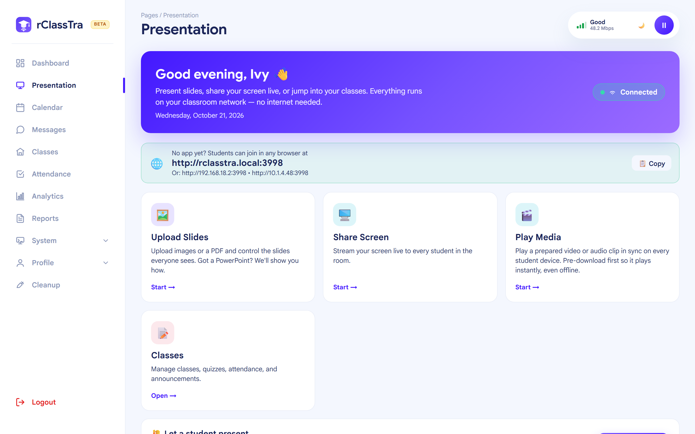
🟢 Connected · no internet ⚡ 40–50 students on one WiFiLow-connectivity classrooms face the same headaches every term. Here's what breaks today, and how one offline-first app puts it right.
Some classrooms may not have a projector or TV. Without one, it's hard for the teacher to show slides or demonstrate on screen so the whole class can follow along.
No projector? No problem. The teacher pushes slides or shares their screen straight to every student's own phone, tablet, or laptop in real time. Everyone gets a front-row view of the lesson — no projector or extra hardware needed.
Printing, distributing, collecting, and hand-grading stacks of paper is slow, costly, and error-prone.
Build a quiz once and publish it to the class. The engine auto-grades and returns scores instantly, with item analysis that shows which questions tripped students up.
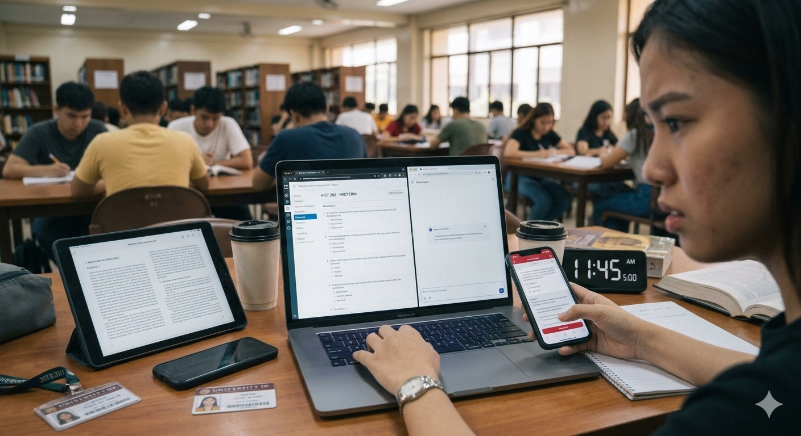
In online exams students lean on AI tools, search the web, switch tabs, or use a second screen. Paper exams are hard to police in a full room — and hand-grading quizzes for section after section eats days of a teacher's time.
Because exams run fully offline on the classroom WiFi, there's no internet — so students can't reach ChatGPT or any AI, and can't look anything up online. Built-in proctoring also enforces fullscreen, flags tab-switching and second monitors, and can record the camera, locking out rule-breakers until the teacher reviews it. And every quiz is auto-graded instantly, so running the same exam across many sections takes minutes, not days — see the screenshots below.
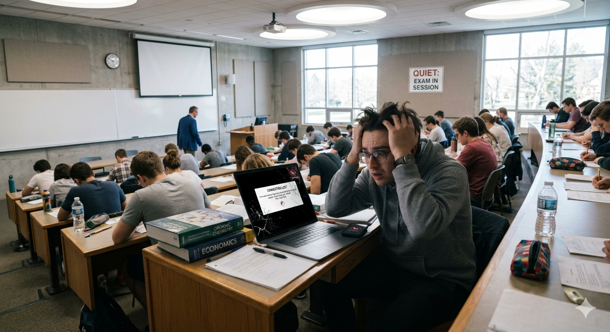
Cloud tools stall the moment the connection drops. If the WiFi cuts out or the power browns out mid-quiz, students lose their answers and the whole exam has to restart.
Everything runs on the classroom WiFi with the teacher's laptop as the server — no internet is ever required. And if the WiFi drops or the power browns out during a quiz, answers keep saving on the student's device and sync back to the teacher automatically once the connection returns — so nobody loses their work.
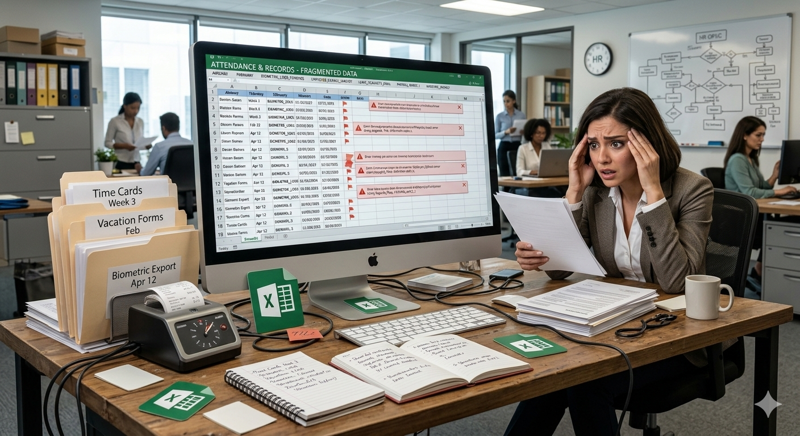
Manual attendance, grade sheets, and reports live in different places — and pulling them together for reviews is painful.
Students check in from their own device in seconds, grades flow in automatically, and you can export progress, attendance, and outcomes as CSV, Excel, or PDF for program reviews.
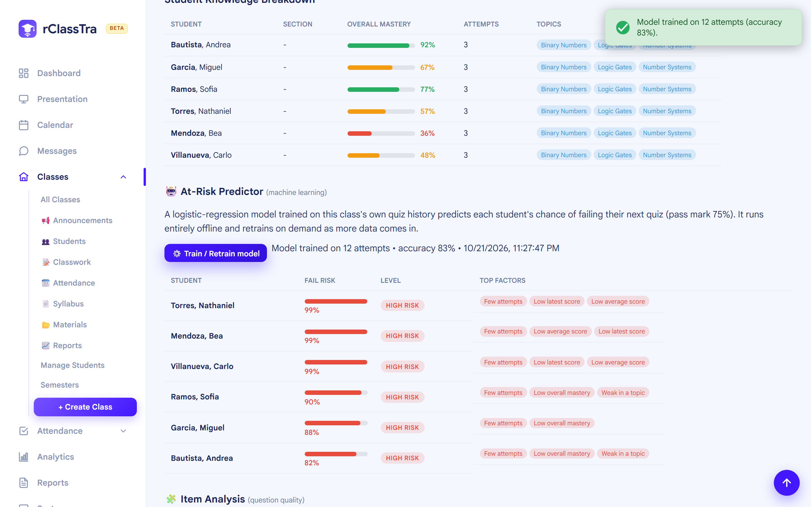
By the time grades are tallied at the end of term, it's often too late to help the students who were quietly falling behind.
Every quiz feeds a built-in analytics view with per-student mastery and a machine-learning at-risk predictor that flags who's likely to fail their next quiz — and why — so teachers can step in early. It all runs offline on the teacher's laptop.
rClassTra replaces a pile of disconnected apps with a single platform your faculty can actually run — even when the internet is down.
Push slides or share your screen live to every student device in the room, synced in real time over the local network.
Build quizzes with multiple question types, publish them instantly, and let the engine grade and return scores automatically.
Students check in from their own device in seconds. Attendance rolls straight into your class records and reports.
At-risk prediction, topic heatmaps, and item analysis turn quiz results into a clear picture of who needs help.
Fullscreen enforcement, tab-switch alerts, second-monitor detection, and optional camera recording keep major exams honest.
Run it on the classroom LAN with no internet, or adopt it school-wide so students can connect online from home too. Same platform, same records, either way.
Student records live on the school's own machine — never locked into a third-party cloud. Export, back up, or move data with one command, online or offline.
A clean, modern interface your faculty will understand without training. Everything below is the real app.
Start a presentation, open a class, or launch a quiz from a single screen. The connection status and classroom link are always one glance away.
Group students by class, share a join code, and jump straight to the roster, classwork, or attendance for each one.
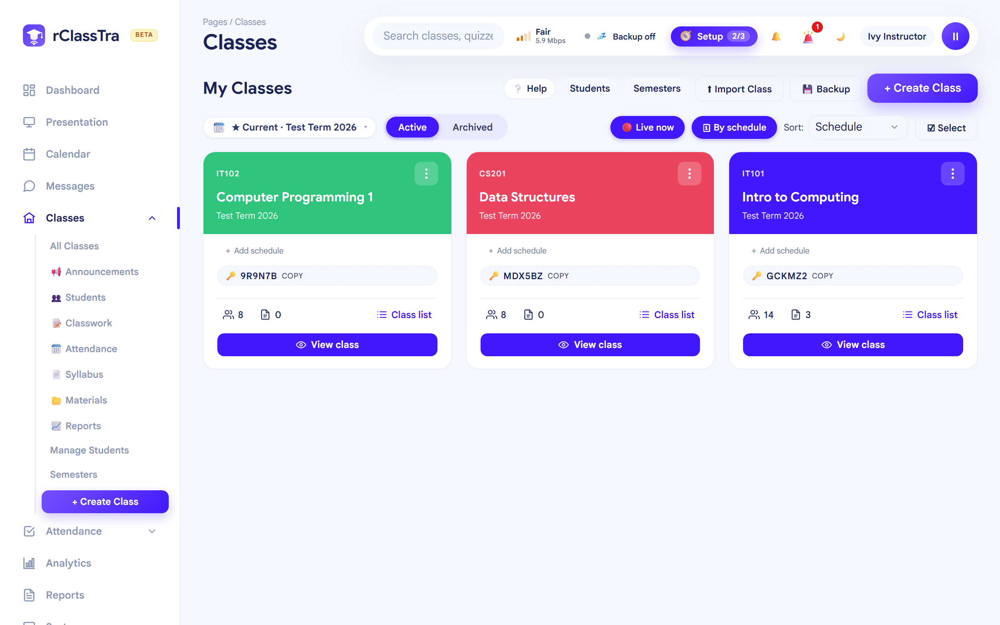
Export student progress, attendance, item analysis, and topic coverage as CSV, Excel, or a printable PDF — ready for program reviews and accreditation.
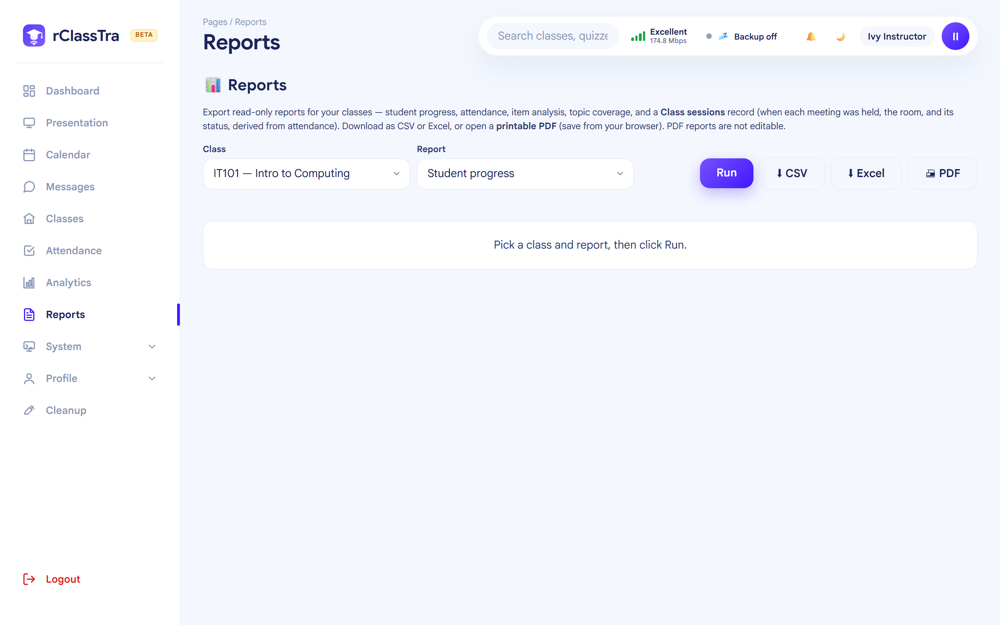
Keep an eye on who's connected and active in real time, so you always know the class is following along.
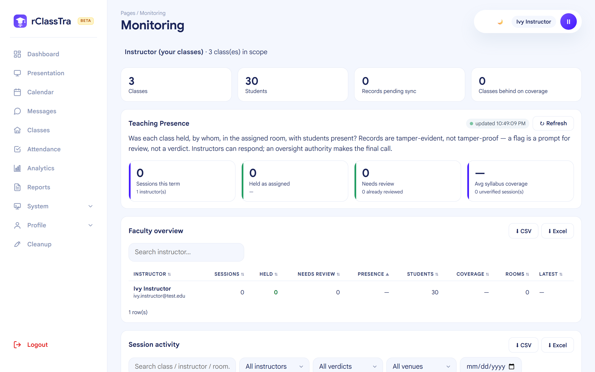
Quiz results turn into a clear picture of who's mastering the material and who's falling behind — with a built-in machine-learning model that predicts who's at risk of failing their next quiz. It all runs offline on the teacher's laptop.
Start a session and students check in from their own phone — by face recognition or a signature on screen. Face matching runs on-device, fully offline. No more passing a paper sheet around the room.
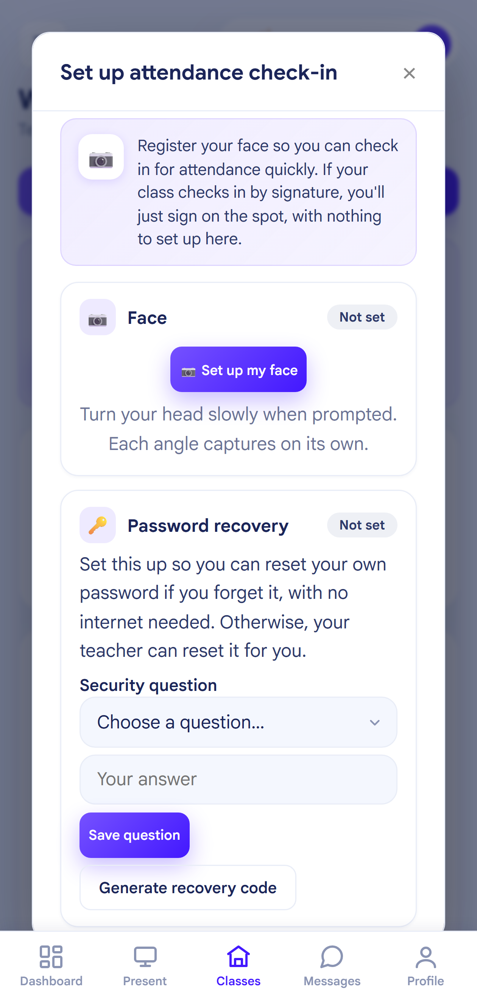
When you do have internet, rClassTra can email students their scores and class updates using your own Gmail account — so it's completely free, with no subscription. Handy for releasing grades after you've left the school network or reaching students learning from home.
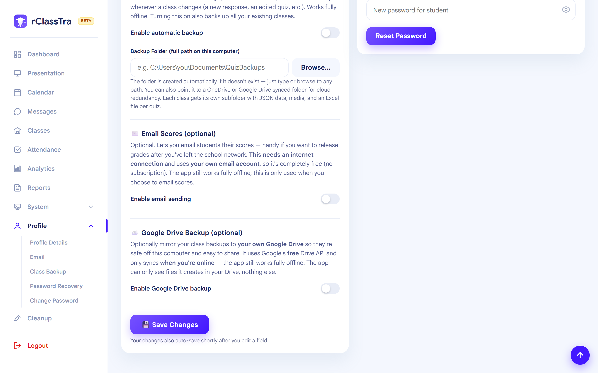
During a quiz, rClassTra watches for tab-switching, leaving fullscreen, screenshots, and second monitors. Students get a warning; repeat offenders are locked out until you decide.
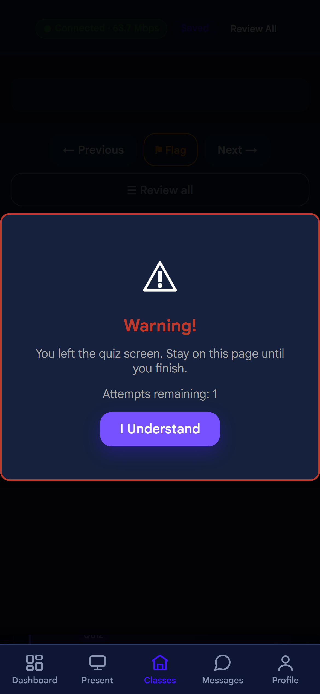
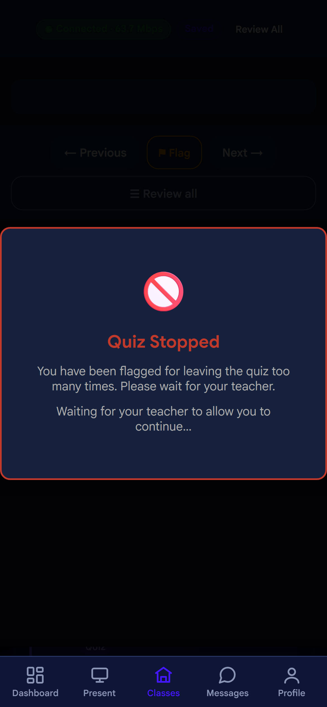
Every flagged student lands in a review list. Give them another chance with Allow, or block the attempt with Deny — individually or in bulk.
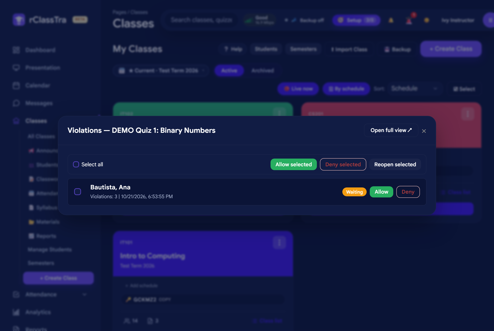
rClassTra ships with both a crisp light theme and an easy-on-the-eyes dark theme — switch anytime with one tap.
☀️ Light theme
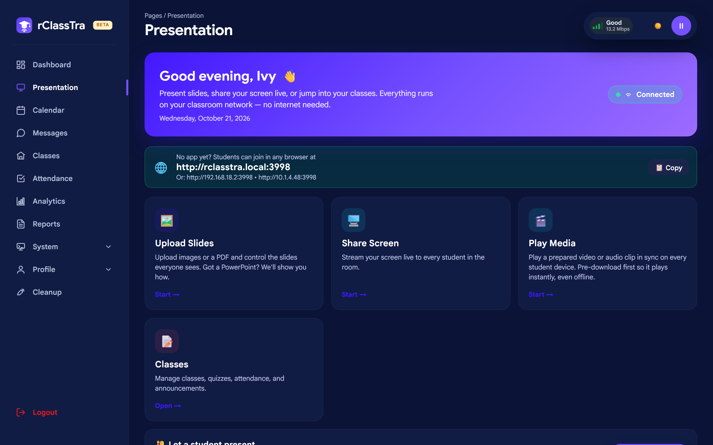
🌙 Dark theme
No data center, no subscriptions, no cloud. Just one machine and the classroom WiFi.
Launch rClassTra. It becomes the classroom server and shows one simple link to share.
Everyone opens the link (or scans a QR) on their own device — phone, tablet, or laptop.
Present, run quizzes, take attendance, and review analytics — all in real time, fully offline.
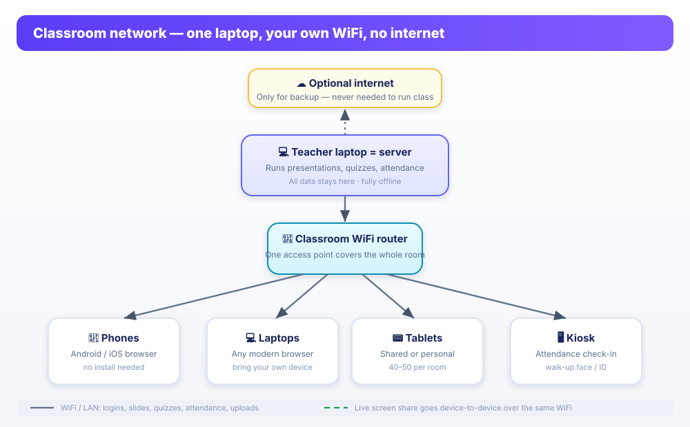
The same clean interface scales from a teacher's laptop to a student's phone — no separate "mobile site," just one responsive app.
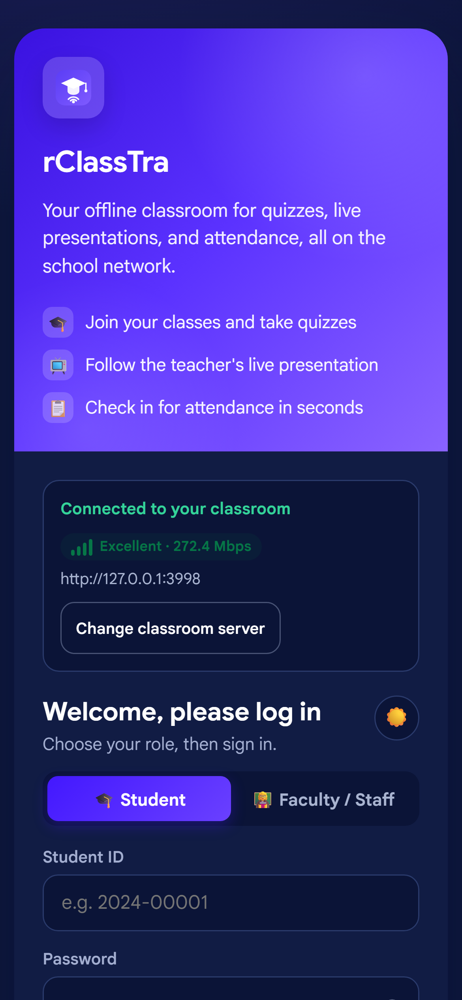
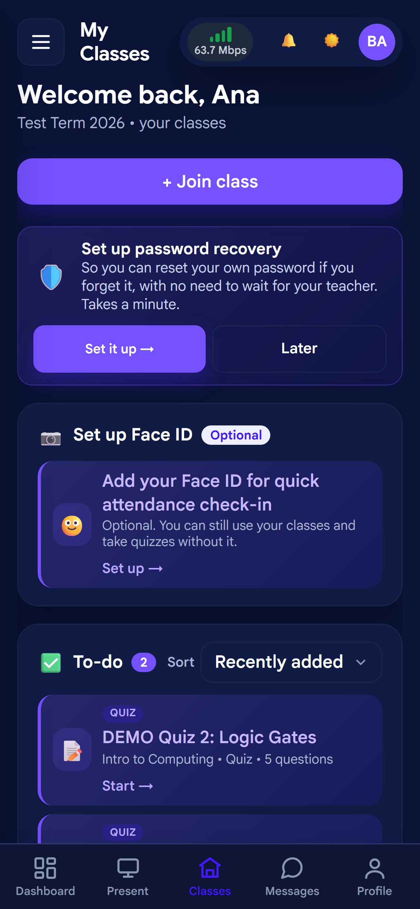
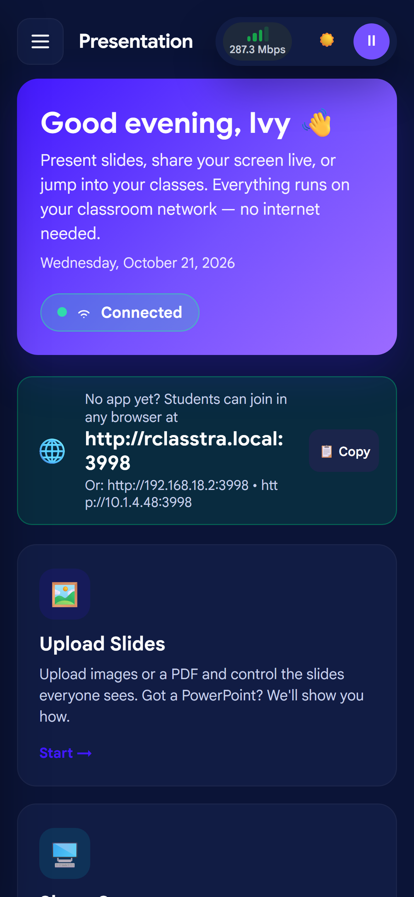
A packaged Windows desktop app for faculty — the full classroom server in one installer.
AvailableA native Android app students install from the classroom server over the LAN — no app store, no internet.
AvailableNo install? Students and staff can join in any modern browser on the same WiFi.
AvailableIt runs on hardware you already own. No per-seat licenses, no subscription, no cloud bill.
Built for low-connectivity rooms. Classes keep running even when the campus link is down.
Student records never leave the school's machines, which keeps you in control and simplifies compliance.
A guided first-run setup and a familiar interface mean teachers can start the same day, with minimal training.
Exportable reports on progress, attendance, and outcomes support program assessment and accreditation.
Presentations, quizzes, attendance, and analytics in one place — less to manage, less to pay for.
rClassTra is available to partner schools and anyone interested in using it as their learning platform — online, offline, or both. Request a copy and we'll help you get set up and running with your classes.
Requests go straight to our Google Form — it takes about a minute.
Yes. The teacher's laptop is the server and everything runs over the classroom WiFi. The internet is only ever optional, for backup.
Any phone, tablet, or laptop with a browser works — plus there's a native Android app for students and a Windows desktop app for faculty.
On the school's own machine. It is never uploaded to a third-party cloud, and it can be exported or moved with a single command.
During exams it enforces fullscreen, flags tab-switching and second monitors, can record the camera, and locks out repeat offenders until the teacher reviews them.
It's designed for rooms of 40–50 devices on a single access point — the typical classroom size.
It runs on hardware you already have, with no per-seat licensing or subscription.